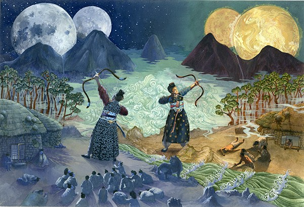
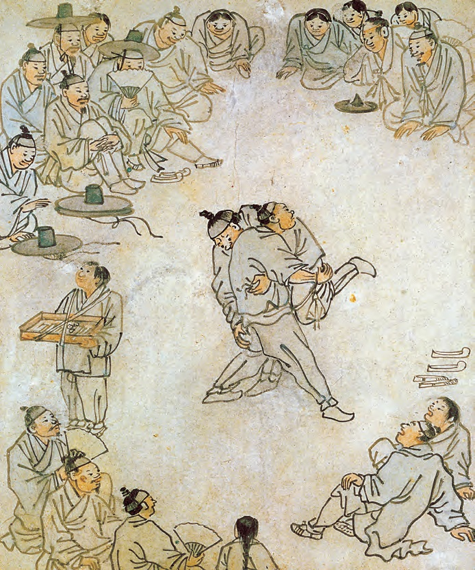
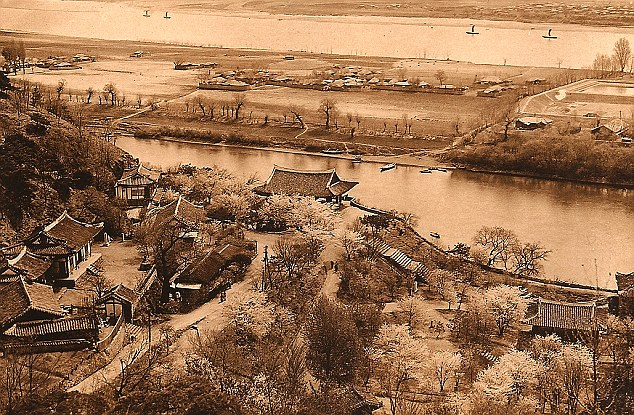

Ancient Korea
This section of the website will describe the periods of Korea's history from circa 700 BCE all the way to 1897 AD. This span of time is split into 4 subsections; Gojoseon from 700 BCE to 668 AD, the 3 kingdoms period from 75 BCE to 918 AD, Goryeo from 918 to 1392, and lastly Joseon from 1392 to 1897. 
Gojoseon
Firstly, the Gojoseon period from 700 BCE was one of the oldest large kingdoms in korea, with the earliest records of it being from chinese scripts saying it existed as far back as 700 BCE and maube even before that. You can read about Gojoseon in more detail here
3 kingdoms period
Next in chronological order is the 3 kingdoms period, during which the three kindgoms; Silla, Baekje, and Goguryeo controlled the Korean peninsula until 918 AD, leading into the kingdom of Goryeo. see more about the 3 kingdoms period here 
Goryeo
After that is the Goryeo period during which one of the most progressive societies of it's time occupied the whole of the Korean peninsula for nearly 500 years, up until it's fall in 1392 when a rebellion led to a new dynasty. More about Goryeo here 
Joseon dynasty
Lastly was the Joseon dynasty which spanned over 500 years from 1392 to 1897 when the korean empire rose to take the dynasty's place. Find out more about the Joseon dysnasty here